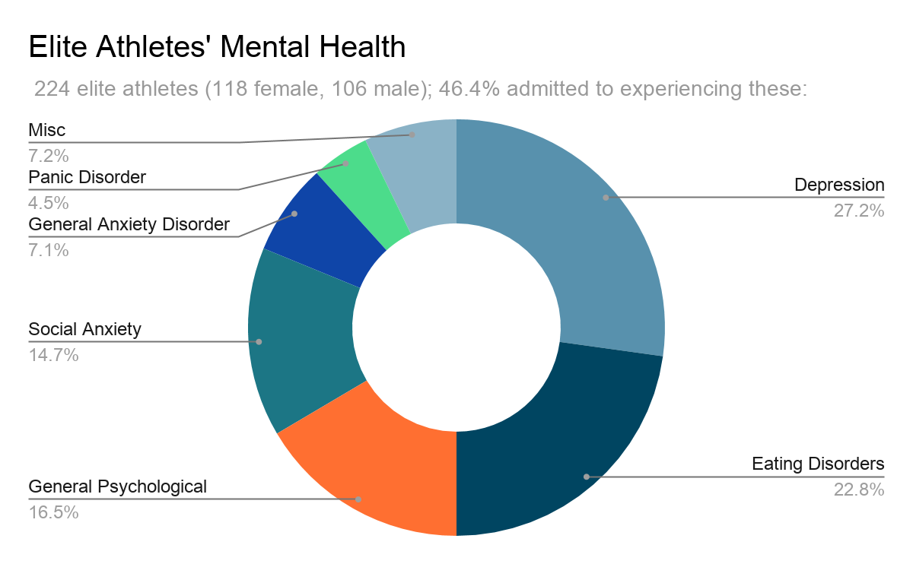
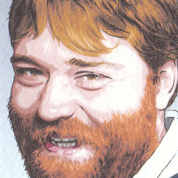

The problem we're trying to solve at Sensental revolves around the mental health of athletes. We aim to help those who suffer from depression and/or anxiety by providing support tools.
But, why athletes?
Being a competitive athlete has its burdens; the stress, burnout, anxiety, there are many factors as to why athletes suffer from mental health. According to a 2015 study by the NCAA on the student-athlete experience, approximately 30% of athletes self-reported cases of being overwhelmed.
In addition, a study was done on 224 elite athletes, and 46.4% admitted that they experienced mental health issues. We believe that this is an underserved market that people should address now, as many athletes have gone through several obstacles to reach where they are.

Who Are We?
Naol M. Denko
Co-Founder & CEO
Former collegiate athlete; lived with bipolar disorder for 5+ years; business development aficionado
Candace Ng
Co-Founder & CTO
UWaterloo Biomedical Engineering
Former competitive swimmer; passionate programmer; data science/machine learning enthusiast

David Garrard
Tech Advisor
Founder of Squarify; former CTO at Last Call Analytics (acq. Ample Organics); seasoned tech guru (15+ years)
Dr. Ari Zelmanow - PhD, IPC
Research Advisor
Lindenwood University Cognitive Psychology (PhD)
The Sherlock Holmes of Consumer Behavior; currently the Director of Analytics, Research, and Insights at Panasonic (prev. Twitter); Founder of Profile For Profit
How Are We Solving This Problem?
Chatbot
Symptom Tracking
Time Management Tools
Our solution is to create a chatbot and various tools to support athletes daily.
A 24/7 companion in their pocket; someone who will be there for them anytime, anywhere.
However, we want to be a supplement to in-person therapy, so we will connect athletes to nearby mental health professionals whenever they're ready and able to.
We want to be apart of every athlete's recovery from depression and/or anxiety.
We hope to make athletes live better and more fulfilling lives.
Follow Us
Stay updated with our progress; sign-up to our newsletter below!
Relevant Reseach
Here are some relevant research papers that help solidify our reasoning on how AI therapy is beneficial, but nascent. Also, some more papers on how athletes' mental health is a problem we should look into deeply.


Follow Us
Stay updated with our progress; sign-up to our newsletter below!